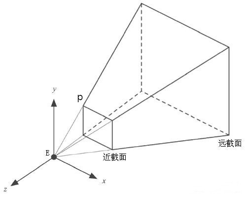
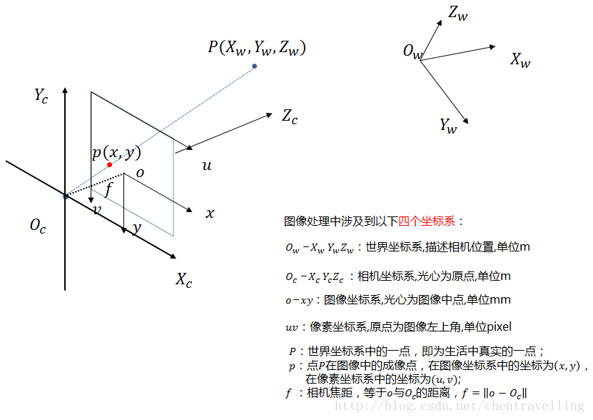
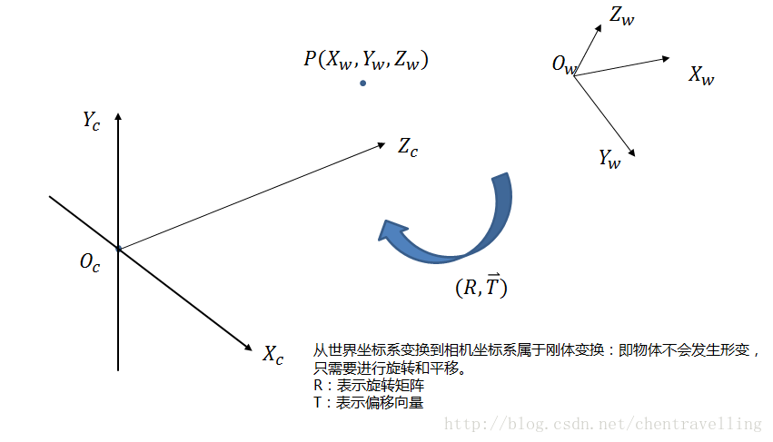
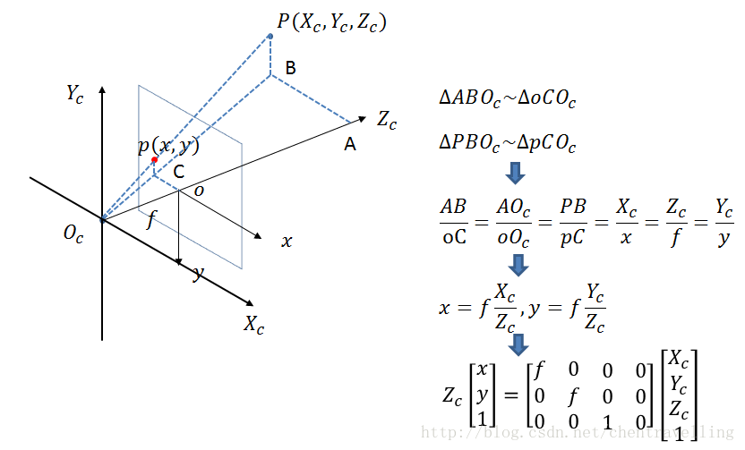
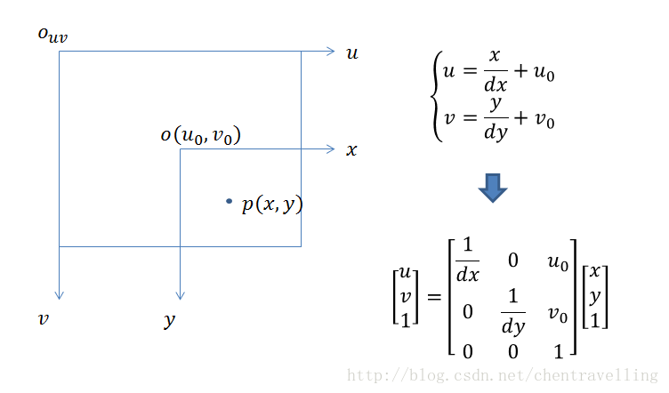
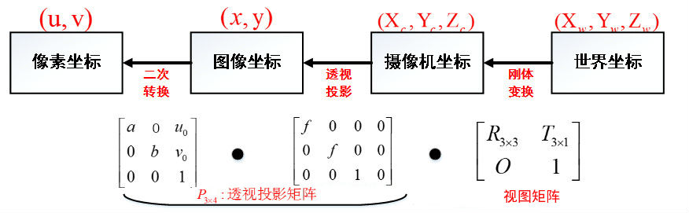
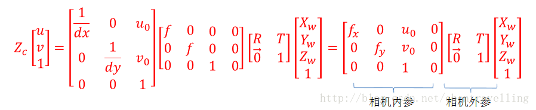

计算机视觉之相机成像原理与坐标系转换
计算机视觉是一门研究用摄影机和计算机代替人眼对目标进行识别、跟踪和测量的学科。为了解该门学科，首先应掌握投影原理和世界坐标系、相机坐标系、图像坐标系、像素坐标系之间的转换关系。
三维投影
计算机3D图形学中，三维投影是将三维空间中的点映射到二维平面上的方法。常用三维投影有正交投影和透视投影。正交投影通常用于对现实物品的三维建模，而透视投影与人的视觉系统类似，常用于在二维平面呈现三维世界。
正交投影原理
正交投影是一系列用于显示三维物体的轮廓、细节或精确测量结果的变换方法。通常又称作截面图、鸟瞰图或立面图。
当视平面的法向（即摄像机的朝向）平行于笛卡尔坐标系三根坐标轴中的一根，数学变换定义如下： 若使用一个平行于y轴（侧视图）的正交投影将三维点 $a_{x}$, $a_{y}$,$a_{z}$投影到二维平面上得到二维点 $b_{x}$,$b_{y}$，可以使用如下公式
$$b_x=s_xa_x+c_x$$
$$b_y=s_za_z+c_z$$
其中向量s是一个任意的缩放因子，而c是一个任意的偏移量。这些常量可自由选择，通常用于将视口调整到一个合适的位置。该投影变换同样可以使用矩阵表示（为清晰起见引入临时向量d）
$$
\begin{bmatrix}
d_x \
d_y \
\end{bmatrix}
=
\begin{bmatrix}
1 & 0 & 0 \
0 & 0 & 1 \
\end{bmatrix}
\begin{bmatrix}
a_x \
a_y \
a_z \
\end{bmatrix}
$$
$$
\begin{bmatrix}
b_x\
b_y\
\end{bmatrix}
=
\begin{bmatrix}
s_x & 0 \
0 & s_z \
\end{bmatrix}
\begin{bmatrix}
d_x\
d_y\
\end{bmatrix}
+
\begin{bmatrix}
c_x\
c_z\
\end{bmatrix}
$$
虽然正交投影产生的图像在一定程度上反映了物体的三维特性，但此类投影图像和实际观测到的并不相同。特别是对于相同长度的平行线段，无论离虚拟观察者（摄像机）远近与否，它们都会在正交投影中显示为相同长度。这会导致较近的线段看起来被缩短了。
透视投影原理
透视投影是为了获得接近真实三维物体的视觉效果而在二维的纸或者画布平面上绘图或者渲染的一种方法，它也称为透视图。透视投影的绘制必须根据已有的几何规则进行。
常用的透视投影视椎体模型如图1所示。设视点E位于原点，视平面P垂直于Z轴，且四边分别平行于x轴和y轴，视椎体的近截面离视点的距离为n，远截面离视点的距离为f，且一般取近截面为视平面。

坐标系之间的转换
计算机视觉通常涉及到四个坐标系：像素平面坐标系（u,v）、像平面坐标系（图像物理坐标第（x,y）、相机坐标系（Xc,Yc,Zc）和世界坐标系（Xw,Yw,Zw），如图2所示。

1 : 世界坐标系：根据情况而定，可以表示任何物体。单位m。
2：相机坐标系：以摄像机光心为原点（在针孔模型中也就是针孔为光心），z轴与光轴重合也就是z轴指向相机的前方（也就是与成像平面垂直），x轴与y轴的正方向与物体坐标系平行，其中上图中的f为摄像机的焦距。单位m
3：图像物理坐标系（也叫平面坐标系）：用物理单位表示像素的位置，坐标原点为摄像机光轴与图像物理坐标系的交点位置。坐标系为图上o-xy。单位是mm。单位毫米的原因是此时由于相机内部的CCD传感器是很小的，比如8mm x 6mm。但是最后图像照片是也像素为单位比如640x480.这就涉及到了图像物理坐标系与像素坐标系的变换了。下面的像素坐标系将会讲到。
4：像素坐标系：以像素为单位，坐标原点在左上角。这也是一些opencv，OpenGL等库的坐标原点选在左上角的原因。当然明显看出CCD传感器以mm单位到像素中间有转换的。举个例子，CCD传感上上面的8mm x 6mm，转换到像素大小是640x480. 假如dx表示像素坐标系中每个像素的物理大小就是1/80. 也就是说毫米与像素点的之间关系是piexl/mm.
世界坐标系到相机坐标系的转换
物体之间的坐标系变换都可以表示坐标系的旋转变换加上平移变换，则世界坐标系到相机坐标系的转换关系也是如此，他们之间的变换如图3所示。

可以得到P点在相机坐标系下的坐标:
$$
\begin{bmatrix}
X_c\
Y_c\
Z_c\
\end{bmatrix}
=
R
\begin{bmatrix}
X_w\
Y_w\
Z_w\
\end{bmatrix}
+T
\Rightarrow
\begin{bmatrix}
X_c\
Y_c\
Z_c\
1\
\end{bmatrix}
=
\begin{bmatrix}
R & T\
\vec{0} & 1\
\end{bmatrix}
\begin{bmatrix}
X_w\
Y_w\
Z_w\
1\
\end{bmatrix}
,
R:33,T:31
$$
相机坐标系到图像物理坐标系的转换
从相机坐标系到图像坐标系，属于透视投影关系，从3D转换到2D。 也可以看成是针孔模型的变种。该转换满足三角形的相似定理，如图4所示。

图像物理坐标系到像素坐标系的转换
图像物理坐标系到像素坐标系的转换不涉及旋转变换，但是坐标原点位置不一致，大小不一致，涉及伸缩变换及平移变换，如图5所示。

小结
四个坐标系之间存在着下述关系 ( 矩阵依次左乘 )，如图6所示:


其中相机的内参和外参可以通过张正友标定获取。通过最终的转换关系来看，一个三维中的坐标点，的确可以在图像中找到一个对应的像素点，但是反过来，通过图像中的一个点找到它在三维中对应的点就很成了一个问题，因为我们并不知道等式左边的Zc的值。
参考链接
- 三维投影,by wikipedia.
- 透视投影的原理和实现,by Goncely.
- 计算机视觉：相机成像原理：世界坐标系、相机坐标系、图像坐标系、像素坐标系之间的转换,by 生活没有if-else
- 【相机标定】四个坐标系之间的变换关系
- SLAM相机位姿估计(1),by Zhao xuhui.
- 单目SLAM理论基础,by Zhao xuhui.
- 透视投影详解,by zdd.
- 旋转变换（一）旋转矩阵,by csxiaoshui.
- 第十二课 透视投影,by 极客学院.
- 光栅化渲染-6-透视投影矩阵,by Aincrad.